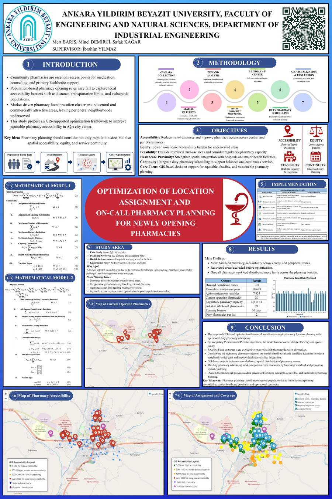
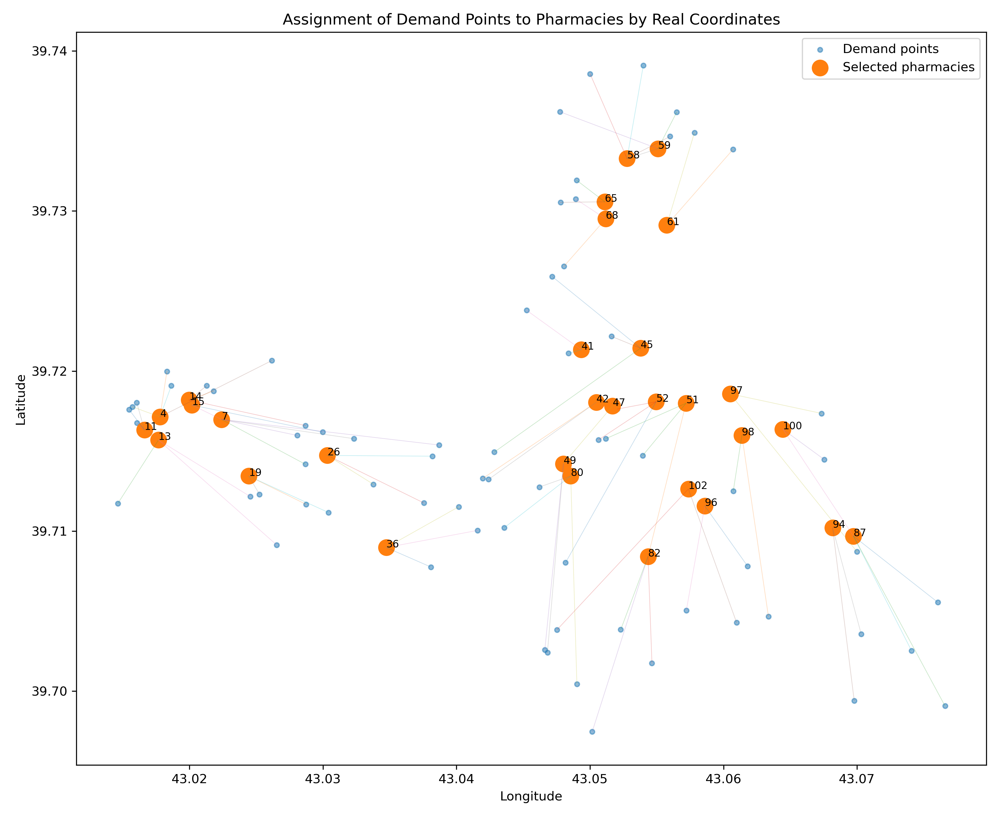
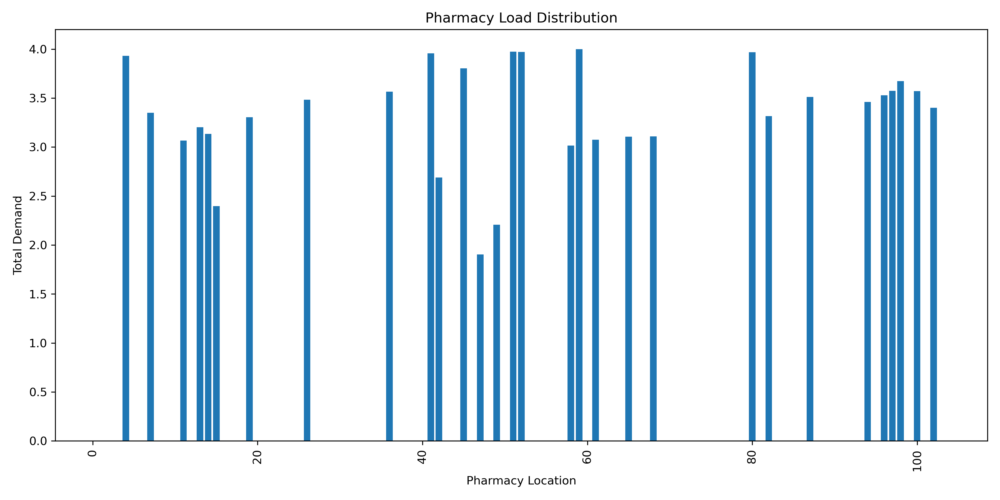
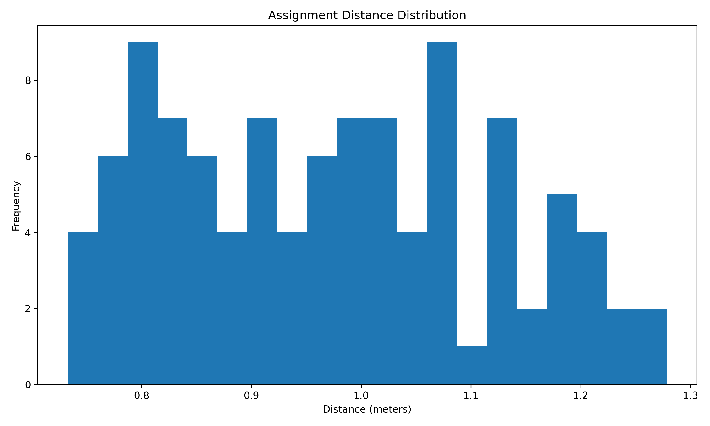
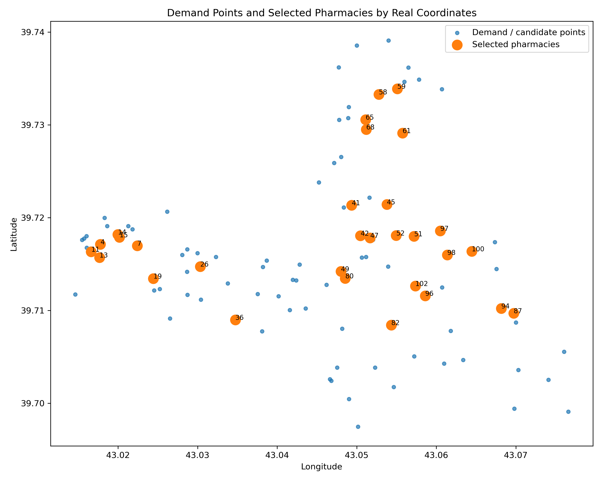
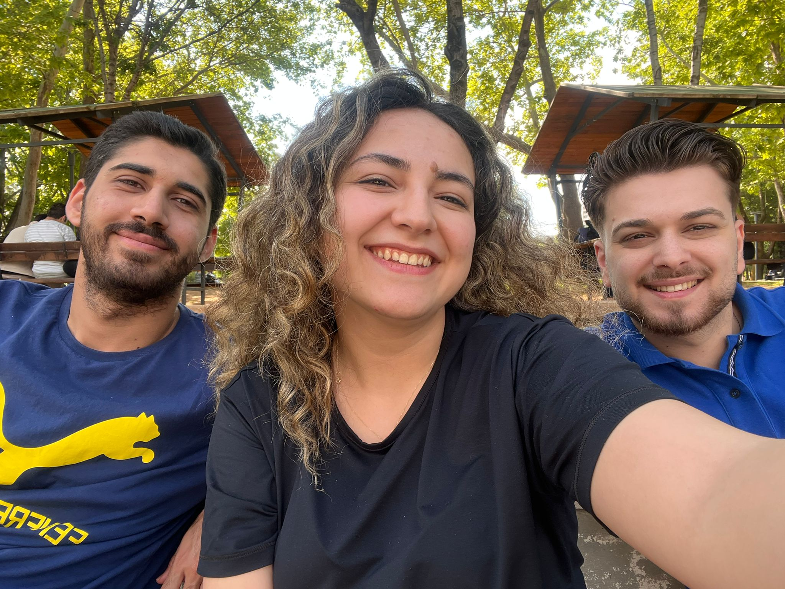
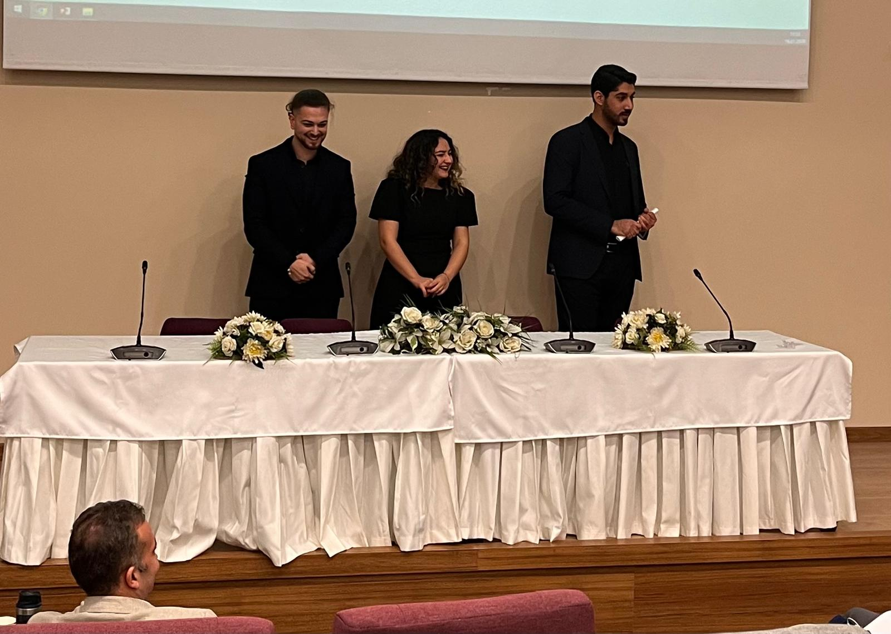

Optimization of Location Assignment and On‑Call Pharmacy Planning
Digital project page for the graduation poster, source code, report, GIS maps and team information. The study combines GIS-supported spatial analysis with a multi-objective MILP model for newly opening pharmacies in the Ağrı pilot area.
What the framework solves
The content is structured for quick mobile scanning and detailed desktop review.
Strategic Location Selection
Determines suitable pharmacy locations by balancing weighted travel distance, worst-case accessibility, proxy opening cost and healthcare proximity.
GIS-Based Spatial Feasibility
Uses coordinate-based spatial analysis and restricted-area filtering to keep candidate pharmacies within feasible urban locations.
On-Call Duty Scheduling
Plans daily duty pharmacies with coverage, workload balance and rest-period logic to support continuous pharmaceutical service.
Final poster and project summary
The final poster is available as a high-resolution visual with a full-size open button for desktop viewing.

Improve pharmacy access by combining efficiency, equity and service continuity.
GoalAğrı city center is modeled using 103 demand and candidate location zones.
PilotHybrid P‑Median and P‑Center MILP with normalized multi-objective weighting.
MILPInteractive maps show optimized pharmacies, current pharmacies, accessibility levels and assignment structures.
MapsDuty-pharmacy scheduling distributes workload while supporting emergency service continuity.
DutyThe model generates a balanced decision-support structure for pharmacy planning beyond population-only rules.
ImpactTwo-stage planning flow
Key outputs
Accessibility
Demand points are assigned to selected pharmacies using distance-based accessibility relationships and maximum service-distance logic.
Equity
The P‑Center component reduces worst-case accessibility burden for peripheral and underserved areas.
Computation
Sparse MILP preprocessing reduces unnecessary assignment pairs and improves model runtime without changing the planning logic.
Maps embedded in the website
The map is embedded for desktop and also opens full-screen on phones for comfortable zooming.
Model graphics




Project files for QR visitors
All files use relative paths and are ready for GitHub Pages deployment from the repository root.
Mert Barış · Minel Demirci · Şafak Kağar
The project team section is placed at the end of the page with presentation and team photos.

Graduation Project Team
